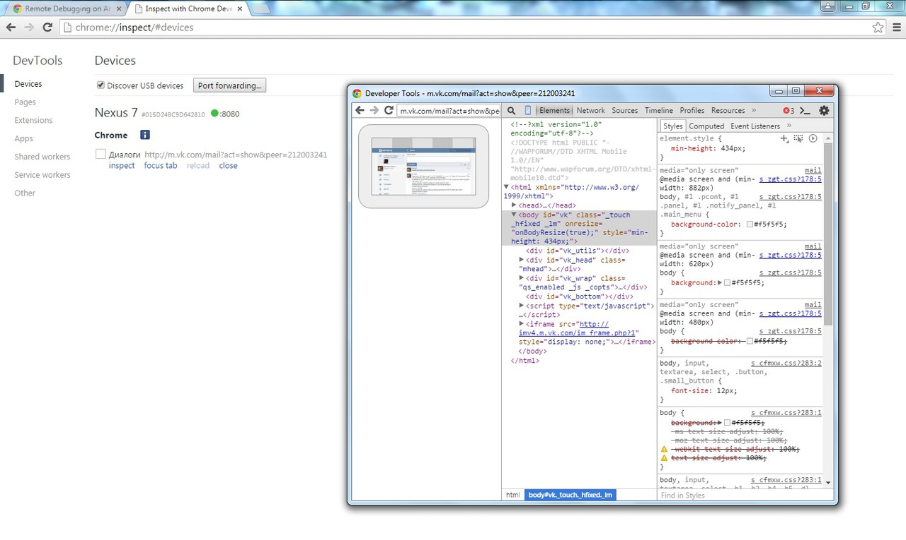

https://developer.chrome.com/devtools/docs/remote-debugging
1. Подключить устройство к ПК
2. На устройстве включить опцию USB debugging в Developer options
3. В браузере в адресной строке ввести: chrome://inspect/#devices

Created with the Personal Edition of HelpNDoc: Easy to use tool to create HTML Help files and Help web sites